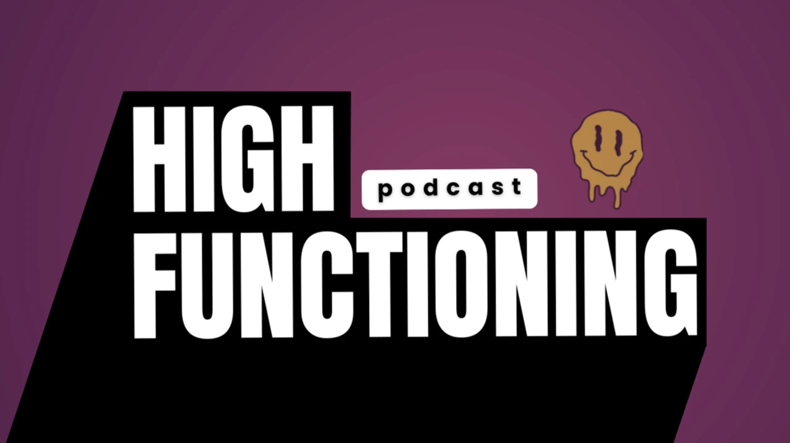
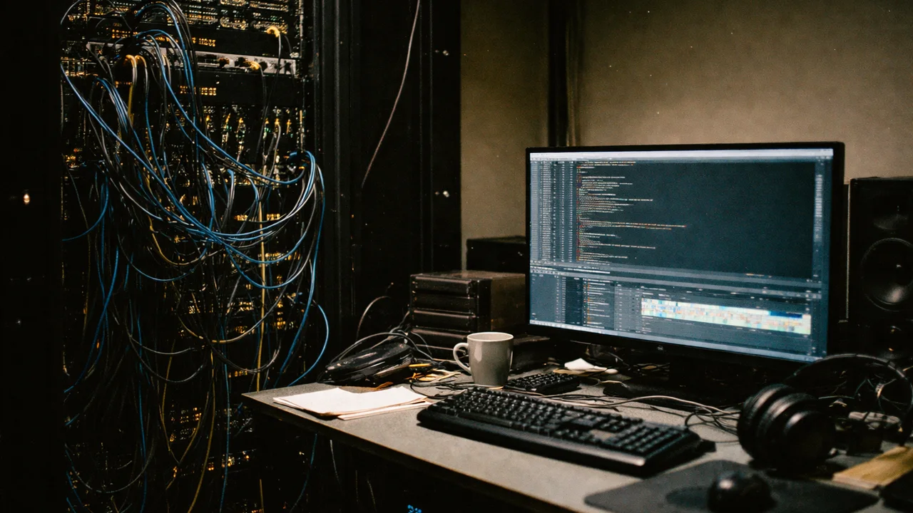

Production Lane · Podcast
Podcast production, end to end.
I run shows from the booking conversation to the published episode and the clips that come after. I edit, mix, caption, and package; I build the React + Remotion pipeline that absorbs the parts that don't need a human; and I keep the same standard on every release.
- Producer
- Editor
- Captions
- Pipeline
This is the overview of my podcast production lane. For the full numbers and the pipeline I built, read the deep dive:

Shows I produce
How I produce a show
The same workflow on every episode. Production hands on the parts that need taste; the pipeline on the parts that just need to happen.
-
01
Book and prep the guest
Outreach, pre-interview, run-of-show. The show stands or falls on who's in front of the mic; the rest of the pipeline assumes a good conversation in the can.
-
02
Edit and mix the episode
Multi-camera cut, color pass, full audio post in DaVinci or Premiere. The same standard on episode 50 as on episode 1.
-
03
Captions on every release
Caption pass and subtitle QC. Accessibility is a production step, not a publishing step.
-
04
Pipeline absorbs the rest
Transcript ingestion → schema-validated render contracts → programmatic clip rendering → template-driven lower-thirds. The Remotion + Zod stack ships social clips and graphics with fewer repeated timeline rebuilds.
-
05
Package and publish
Thumbnails, titles, end screens, scheduled distribution. The publish-side work that converts views into a growing channel.
Stack on every show
Production
- DaVinci Resolve · Premiere
- Descript for transcript-first edits
- Multi-camera shooting + ATEM switching
- Caption pass + accessibility QC
Systems
- React + Remotion render compositions
- Zod schemas for typed render contracts
- Node orchestration around transcripts
- Vercel for the show site + serverless endpoints

Who I'm a fit for
Teams that need both halves of the job done by the same person.
- Independent podcast operations growing past one or two episodes a month and feeling the post-production wall.
- Podcast networks (Pushkin-, PRX-, WBUR-style) that want a producer who can also build the pipeline behind a new show.
- Higher ed and L&D teams launching a podcast or lecture series and wanting it to ship reliably from week one.
- In-house brand podcasts at companies where the show is the marketing program, not a side project.